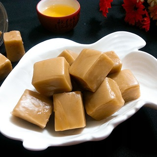
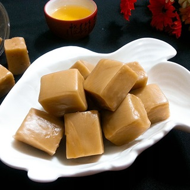

Kẹo dừa là một loại kẹo được chế biến từ nguyên liệu chính là cơm dừa và đường mạch nha. Đây là loại
kẹo đặc sản và là một nghề thủ công truyền thống mang đậm văn hóa xứ sở. Việt Nam có nhiều vùng
trồng dừa nhưng Bến Tre chính là nơi ra đời và phát triển nghệ thuật chế biến kẹo dừa.
Chế biến
Muốn làm kẹo ngon, khâu chọn nguyên liệu rất quan trọng. Thóc nếp dùng để nấu mạch nha phải là nếp
tốt, hạt to chín đều. Để nảy mầm thóc phải được tưới bằng nước mưa sạch rồi đem nấu lấy mạch nha.
Thợ nấu mạch nha phải là thợ lành nghề điêu luyện. Dừa khô lựa trái "rám vàng" mới vừa hái xuống. Vì
trái dừa mới bắt đầu khô này có hương vị đặc trưng, nước cốt có độ ngọt thanh. Đường nấu kẹo phải
chọn loại đường mới, có màu vàng tươi. Món ngon kẹo dừa, lúc đầu được dùng làm quà tặng cho bà con
láng giềng trong những ngày giỗ như là một món quà thắm tình làng nghĩa xóm, sau nổi tiếng nhờ
vị ngọt thanh thanh, đậm đà và mùi thơm béo ngậy.
 
